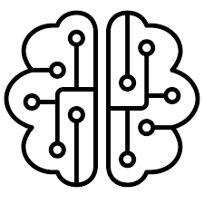

About Me
I’m Jules, an AI researcher passionate about tackling complex challenges in Machine Learning, Scientific Machine Learning (SciML), climate science, and safety. Currently, I’m toward the end of Master’s in Artificial Intelligence at Carnegie Mellon University.
My journey in AI has been fueled by a passion for applying advanced machine learning techniques to real-world problems. Whether it’s leveraging Python and SQL to build predictive models or creating interactive dashboards in Power BI and Tableau, I enjoy translating raw data into actionable insights that drive meaningful change.
I’m a firm believer in the power of open science and collaboration. By sharing ideas and working collectively, I believe we can accelerate breakthroughs in AI and create solutions that benefit both people and the planet.
Interests
- Machine Learning; SciML, and Safety
- Climate Science, and Weather Prediction
- Foundation Research
- Open Science
Education
- 🎓 MSc in Artificial Intelligence, 2022 - 2024
Carnegie Mellon University - 🎓 BSc in Environmental Engineering, 2017 - 2021
University of Rwanda
Skills
 Python
Python TensorFlow
TensorFlow PyTorch
PyTorch- OpenCV
- Git
- Transformers
-  Machine Learning
 Deep Learning
Deep Learning SQL
SQL Power BI
Power BI dbt
dbt Tableau
Tableau- Research
Research & Projects
Drones Computer Vision
Developed an open-source project for analyzing drone footage and applying computer vision techniques like YOLO and Faster R-CNN for real-time object detection and tracking.
Digital Twin for Climate Change
Created a digital twin framework using AI and simulation to model and visualize the potential impacts of climate change on the African continent.
Securing USSD Systems with Machine Learning
Implemented unsupervised anomaly detection algorithms and supervised fraud prediction models to enhance the security of USSD mobile money systems in Africa.
Medical Imaging Hackathon Winner ($3000 in Prizes)
At Nucleate Pittsburgh BioHack, I developed Monte Carlo dropout simulations for uncertainty estimation in medical imaging models and integrated large language models (LLMs) to generate evidence-based medical suggestions based on patient history and model output probabilities.
Neural ODEs for Regional Weather and Climate Prediction (Ongoing Research)
Developing a novel approach for downscaling global climate predictions using Neural ODEs. Leveraged domain-specific datasets and scalable architectures to enhance predictive accuracy for developing regions.
Image Classification & Verification Using Improved ResNets(with SE, Attention Layer)
Implemented ResNet paper and improved it with SE and Transform layers for image classification and face verification, achieving a classification accuracy of 90%+ in both tasks.
The Growing Appetite: Artificial Intelligence's Impact on Electric Power Demand and Climate Implications
A research paper exploring the escalating electrical power consumption of AI, its environmental consequences, and potential mitigation strategies. This paper provides a comprehensive analysis of the technical drivers of AI's energy demand, its impact on power infrastructure, and the associated climate implications.
Atmospheric Circulation and Rainfall Patterns: Bridging Climate Science Fundamentals with Advanced Modeling Techniques
A review paper that provides a comprehensive overview of the fundamental principles governing atmospheric circulation and rainfall patterns, while also exploring the cutting-edge modeling approaches that promise to enhance our predictive capabilities.
Enhancing Security in USSD-based Financial Systems: A Comprehensive Approach Leveraging Machine Learning, and Intelligent Agents.
A research project that develops a comprehensive framework to enhance the security of USSD-based financial systems against social engineering attacks and fraudulent activities. The framework leverages an ensemble of machine learning models and intelligent agents to provide a robust, adaptive, and interpretable solution.
Now Reading
Foundations and Trends in Multimodal Machine Learning: Principles, Challenges, and Open Questions
Paul Pu Liang, Amir Zadeh, Louis-Philippe Morency. 2022.
Attention Is All You Need
Ashish Vaswani, Noam Shazeer, Niki Parmar, Jakob Uszkoreit, Llion Jones, Aidan N. Gomez, Lukasz Kaiser, Illia Polosukhin. 2017.